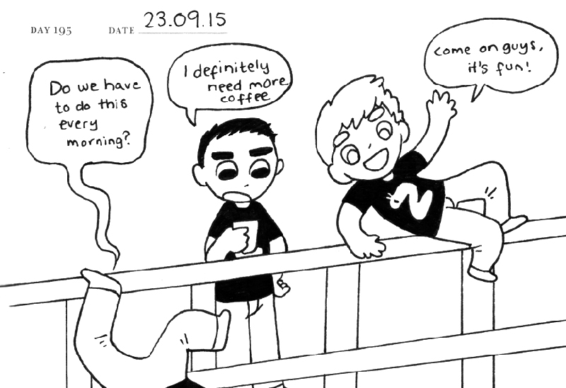

Early Development
Mindfork is an iOS app developed for Zaubug Oy, in 2015. I have worked on this project together with Nicola Zamboni, Anna Lapinsh, Jerry Boucher and Andy Lemon. The original concept was developed by Nicola Zamboni back in 2014, where he experimented with the simplicity of morphing animations in Adobe Flash (now known as Adobe Animate) to create a simple gameplay. He came up with a basic yet fun concept of dodging shapeshifting environment. The game concept was so banal and simple; we were surprised that it was not done before. Back then we were studying at the university, he showed the concept to our peers, everyone liked it. However, the game was left just as another idea, and more or less forgotten until January of 2015. When Anna was looking for a new game concept to enter PGC 2015 - The Very Big Indie Pitch. Mindfork was a perfect candidate, we had only a week or so to polish and submit the game. This is when I fully committed to the project, I had to code the game and work on UI and UX. Nicola had to design levels and together we agreed on the game design. Andy took care of the sound design. Jerry gave us overall advice. While Anna had to orchestrate: development, promotion and publishing. This was my first experience fully releasing a game, we had a huge task ahead of us.
Pocket Gamer Connects 2015
We arrived at the show with a few different games, we were pitching our 2 weeks’ prototype – Mindfork, however we also had Hexfall and Boxlings. We had action-arcade Mindfork, puzzle- arcade Hexfall and puzzle-card game Boxlings. Our games attracted different kinds of audience, which was great, we had a very busy booth. It is an incredible feeling seeing people, enjoying playing your prototypes and asking when it will be out, probably one of the most inspiring feelings I get as a game designer.
The Very Big Indie Pitch
We had an amazing feedback from people who attended our booth. We had our hopes up for The Very Big Indie Pitch. After judges played our game, there was an hour of a pure anticipation. We have done all we could at this point, and we played few other games so we knew what we were up against, victory seemed plausible. The time has come, everyone was invited to see the announcement of the top 3 games. We were very excited, but we did not win any position that time. I have very good memories about this event, we did not get the prize, but we had a good attempt with our prototype. Not to mention, at the after-party I spoke with Rami Ismail, who was one of the judges, he was truly passionate when we discussed the core design, and how our game can be improved. Maybe it is just a gossip, but apparently we came really close to the top 3 games. True or not, I was very proud of our prototype.
Full Time Development
Full of inspiration from the show, we began jotting down ideas, suggestions and testing out new concepts. My initial task was to rewrite the whole engine from scratch to ensure that the game can run on the iOS devices. Since the concept is very straight forward, I had a core engine done within a week or so. That’s when we began experimenting with the gameplay: at what speed and when the environment morphs into a new shape, how the character is controlled and so on. We agreed to make quick – 30 seconds levels, that are intense and fun. Originally we settled for 10 level for the release, however that was later changed to 21, because we felt like the game can be too easy to complete. As we were developing the game, we saw players getting frustrated with how abruptly the game restarts when the player hits the wall, it was completely unforgiving. To balance that, I came up with a reverse transition: once the player hits the wall, the level morphs back to the initial appearance, which gave it fluidity. On top of that we incorporated a risk reward system, where the player gathers particles when passing close to the walls, after a certain amount the ship fills up and changes the shape, also as part of the feedback a trail appears. In this state the ship has one extra life, if the player will hit the wall now, the level will morph back in time and position the ship where the player was 2 seconds ago. This mechanic made the game more forgiving and created a fluid visual aesthetic.
EGX 2015 – Indie MEGABOOTH
Don't eat our controllers!

Trailer
First Impressions
External links
Mindfork on the App Store
Mindfork at the Indie MEGABOOTH
Mindfork review: App Advice
Mindfork review: App Rumors
Mindfork: Interview